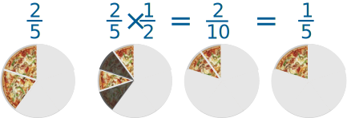

Multiplying Fractions
Multiply the tops, multiply the bottoms.
There are 3 simple steps to multiply fractions
1. Multiply the top numbers (the numerators).
2. Multiply the bottom numbers (the denominators).
3. Simplify the fraction if needed.
Example:
1
2
×
2
5
Step 1. Multiply the top numbers:
1 2 × 2 5 = 1 × 2 = 2
Step 2. Multiply the bottom numbers:
1 2 × 2 5 = 1 × 2 2 × 5 = 2 10
Step 3. Simplify the fraction:
2 10 = 1 5
With Pizza
Here you can see it with pizza ...

Do you see that half of two-fifths is two-tenths?
Do you also see that two-tenths is simpler as one-fifth?
With Pen and Paper
And here is how to do it with a pen and paper (press the play button):
Another Example:
1
3
×
9
16
Step 1. Multiply the top numbers:
1 3 × 9 16 = 1 × 9 = 9
Step 2. Multiply the bottom numbers:
1 3 × 9 16 = 1 × 9 3 × 16 = 9 48
Step 3. Simplify the fraction:
9 48 = 3 16
(This time we simplified by dividing both top and bottom by 3)
The Rhyme
♫ "Multiplying fractions: no big problem,
Top times top over bottom times bottom.
"And don't forget to simplify,
Before it's time to say goodbye" ♫
Fractions and Whole Numbers
What about multiplying fractions and whole numbers?
Make the whole number a fraction, by putting it over 1.
Example: 5 is also 5 1
Then continue as before.
Example:
2
3
× 5
Make 5 into 5 1 :
2 3 × 5 1
Now just go ahead as normal.
Multiply tops and bottoms:
2 3 × 5 1 = 2 × 5 3 × 1 = 10 3
The fraction is already as simple as it can be.
Answer = 10 3
Or you can just think of the whole number as being a "top" number:
Example:
3 ×
2
9
Multiply tops and bottoms:
3 × 2 9 = 3 × 2 9 = 6 9
Simplify:
6 9 = 2 3
Mixed Fractions
You can also read how to multiply mixed fractions